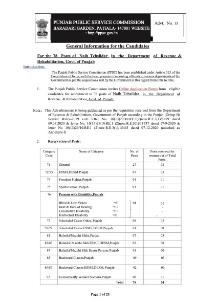

Download
Download PPSC Naib Tehsildar Syllabus and Information (PDF) - 1.4 MB, hosted on this site. No sign-up, no email wall and no redirect through a third party.
About this file
- File name:
ppsc-naib-tehsildar-syllabus-and-information.pdf - Size: 1.4 MB
- Filed under: Previous Year Questions
- Published: 2 October 2026
This page was generated automatically when the PDF was placed in content/previous-year-questions/ppsc-naib-tehsildar/. Its title, slug, description and date come from the file name, and its page count and summary were read out of the PDF itself - the file is the document.